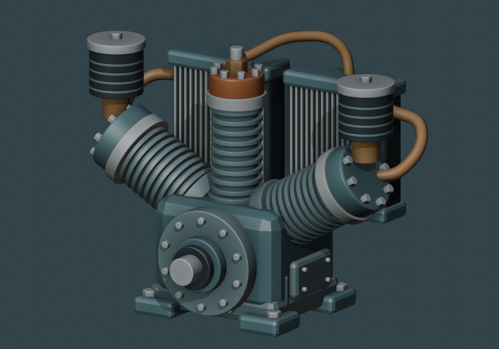

Плановый осмотр
При внешнем осмотре замечаний не зафиксировано.
Запись ТО-014-03ПРОЕКТ QR-МАРКИРОВКИ ТПС
Цифровой паспорт узла тепловоза ТЭМ18ДМ
Учебный экземплярИДЕНТИФИКАЦИЯ
Метка на корпусе ведёт к карточке конкретного компрессора. Здесь можно сверить номер узла, посмотреть его историю и открыть материалы по типу оборудования.
Привязка к борту, идентификатор и записи обслуживания условные. Характеристики типа КТ6 приведены по руководству по эксплуатации.
КОНСТРУКЦИЯ

Откройте 3D, чтобы повернуть модель и рассмотреть детали.
Учебная модель внешнего вида по рисунку 1 из руководства ТЭМ18ДМ. Размеры и детали упрощены.
СПРАВОЧНЫЕ ДАННЫЕ
КТ6 подаёт сжатый воздух в пневматические системы тепловоза. Два боковых цилиндра относятся к первой ступени сжатия, центральный — ко второй.
Источник — руководство по эксплуатации ТЭМ18ДМ, ч. 2.
УЧЕБНЫЕ ЗАПИСИ
При внешнем осмотре замечаний не зафиксировано.
Запись ТО-014-03В карточке зафиксированы замена фильтрующего элемента и закрытие замечания.
Запись ТО-014-02Карточку КМ-014 связали с учебным бортом 014 и выпустили QR-метку.
Запись ТО-014-01МАТЕРИАЛЫ ПО УЗЛУ
Номер узла, дату и вид работ, замечания и статус их устранения. В рабочей системе запись связывают с нарядом, а документацию — с модификацией узла и её действующей редакцией.